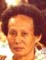
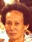
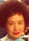
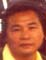
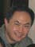
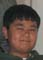
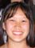

李用秀 Lī Yùng Xiü's Family
李白公 = 亞白
Lī Bàk Gǔng = Ä Bàk1 |
| 李大舅公 |
李二舅公 |
李大姨婆2 |
李用秀
Lī Yùng Xiü |
李彩蓮 (三姨婆)3
Lī Tōi Lẽin
Lǐ Cǎilián |
李美錦 = 陳光正
Mì Gīm4 = Chĩn Göng Jëin |
Ä Jùng |
|
|
|
陳卓宏
Chĩn Chēk Fãng |
陳彩然
Chĩn Tōi Ngěin |
|
|
|
|
| |
Dennis Yee |
|
|
|
|
1亞白 Ä Bàk lived in 康湖尾村 Höng-Vǔ Mī-Tǔn.
2李大姨婆 lived in 洋欄村 Yẽng Lãn Tǔn.
3李彩蓮 Tōi Lěin Lived in Quebec City, Quebec, Canada.
4李美錦 Lī Mì Gīm was raised by her aunt, 李用秀 Lī Yùng Xiü.
陳業確 Chĩn Ngèp Kōk's Family*
M23
德 |
|
M24
業 |
陳業確
Chĩn Ngèp Kōk
Yèquè |
M25
光 |
陳群玩
Chĩn Kǔn Ngòn
Qúnwán |
 

陳光正 名群洲 = 李美錦
Chĩn Göng Jëin [Kǔn Jiǔ] = Lī Mì Gīm
Guāngzhèng [Qúnzhōu] = Lǐ Měijǐn |
M26
前 |
陳卓俊
Chĩn Chēk Dün
Zhuōjùn |
陳卓宏
Chĩn Chēk Fãng
Zhuōhóng
Cherk Quon = Judy |


陳彩然 = 黃
Chĩn Tōi Ngěin = Võng
Cǎirán =
Anna Yee = Chock Yee |
M27
遠 |
|
Sherman = Nancy |
Yuman = |
Kathy = |

Dennis Yee=Sun Liqun |
Sharon Yee = Wayne Taniguchi |
Angela Yee |

Diana Yee =
James Penner |
M28
遵 |
|
Joshua |
Marianne |
son |
|

Adam |

Kimi |
Kristin |
|
Lindsey |
* I was not able to connect 陳卓宏 Chĩn Chēk Füng to the Chĩn Family Tree. 陳卓宏 Chĩn Chēk Füng and his sister 陳彩然 Chĩn Tōi Ngěin were raised in
向南 Hëng Nǎm, a hamlet of 潢村 Vōng Tûn.
陳卓宏 Chĩn Chēk Füng's wife is the sister of 鄺理中 Föng Lî Jüng Dr. Raymond Fong's wife's mother. Raymond Fong is an ophthalmologist, practicing in Manhattan. Cherk Quon has 3 grandchildren.